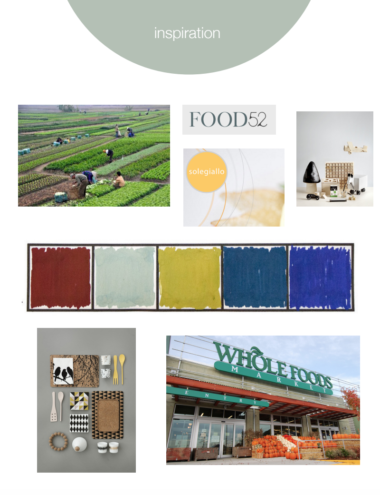
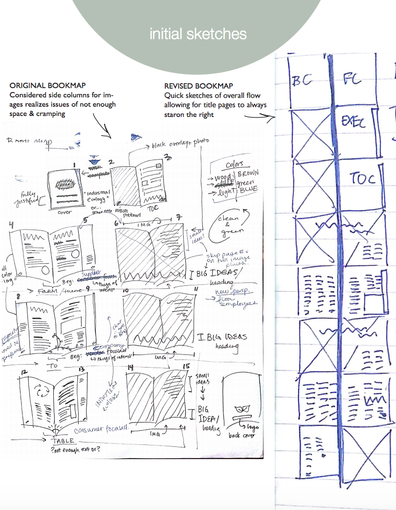
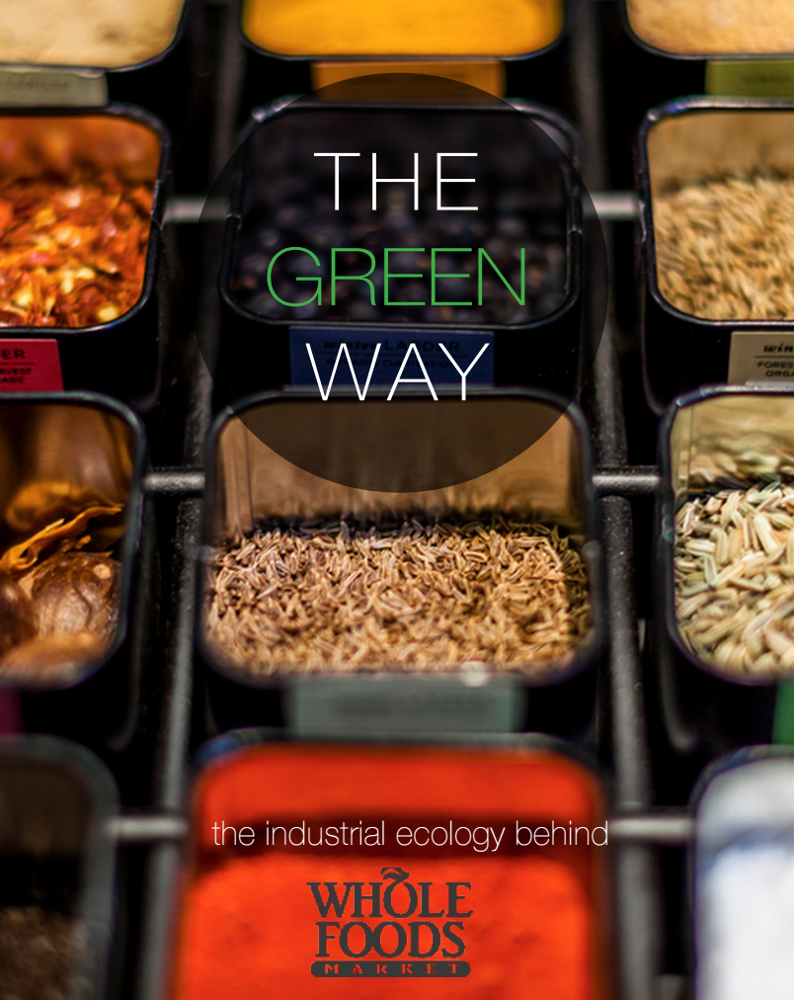
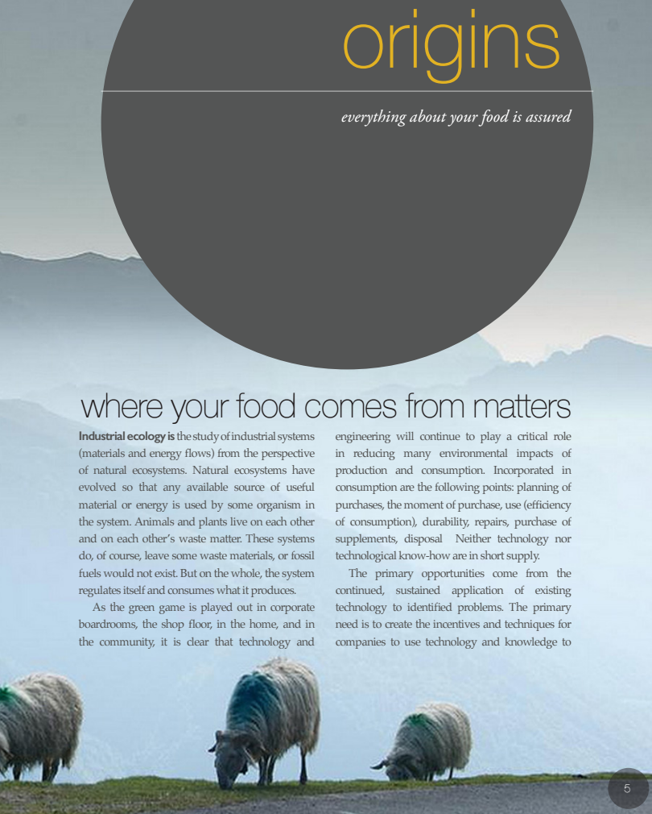
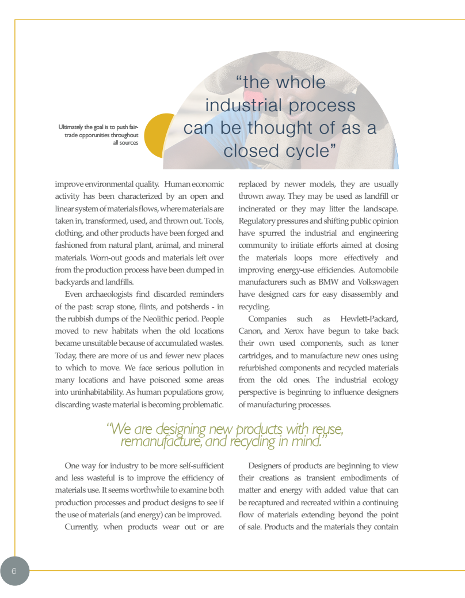
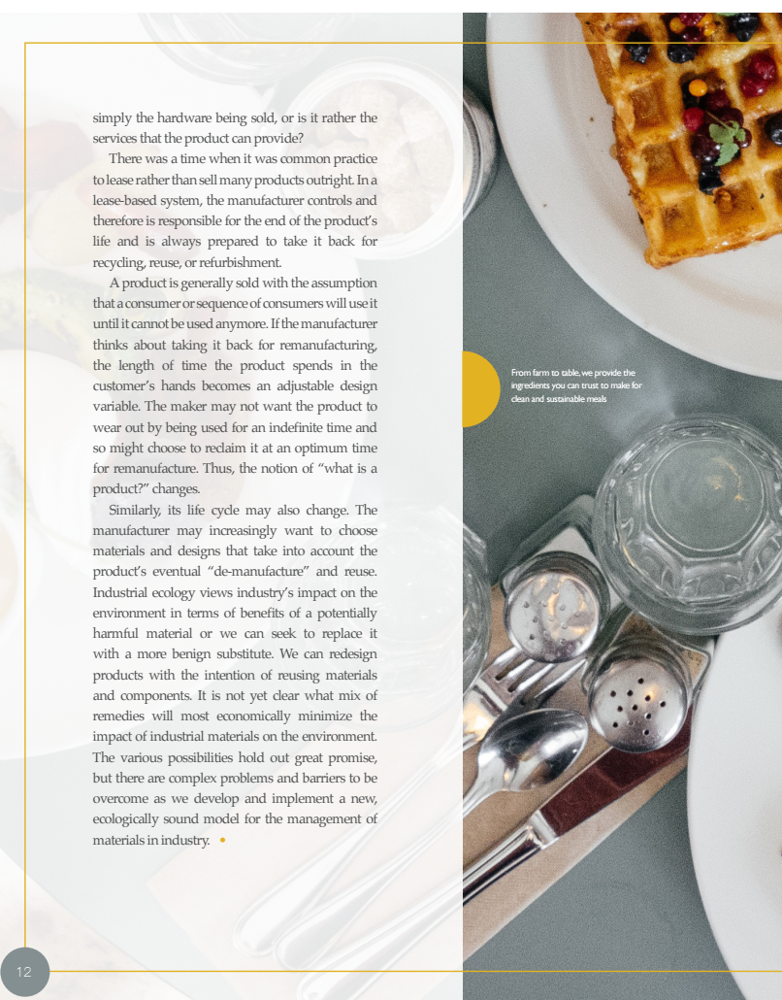
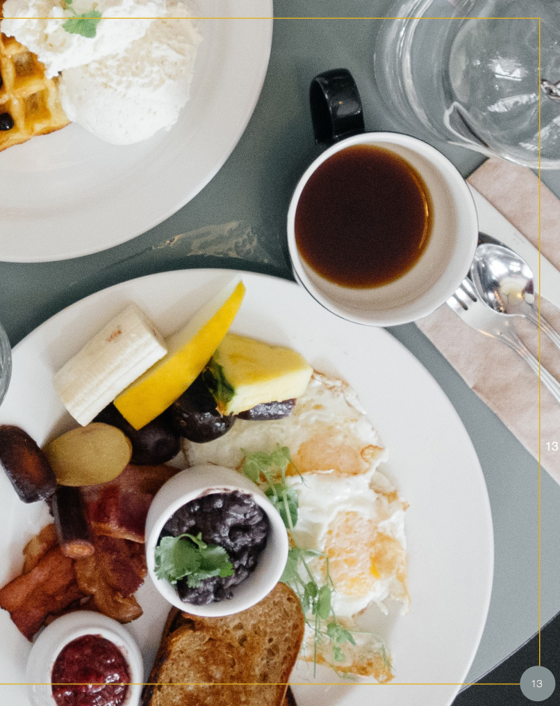

Fall 2015
Carnegie Mellon University, Pittsburgh, Pennsylvania
InDesign | Print
As an in class project, we were individually tasked to design a booklet containing a large body of text on "industrial ecology" for an exisiting company of our choice. I choose Whole Foods because of they have a strong existing brand and presence that the everyday person is aware of, as well as being a company that would believably publish a booklet on industrial ecology.
To me, Whole Foods is known for its clean adherence to organic, healthy, and local eating. Their prices lie on the more expensive side of simple grocery shopping, and gives off the impression of selling food as "investments". I choose to design my industrial ecology booklet with these ideas in mind - the idea of an investment, just like their commitment to wholesomely healthy and clean foods from and for the community. All in all, I wanted to tie this together with a "farm to table" story, to give the booklet itself some sense of order. The pages start with more imagery of farms, ends with spreads of a fully prepared table. I felt that this would encompansate the investment that Whole Foods makes - from its producers to its consumers - and tie it in with the theme of commitment to industrial ecology. Full booklet Documentation Selected pages:





